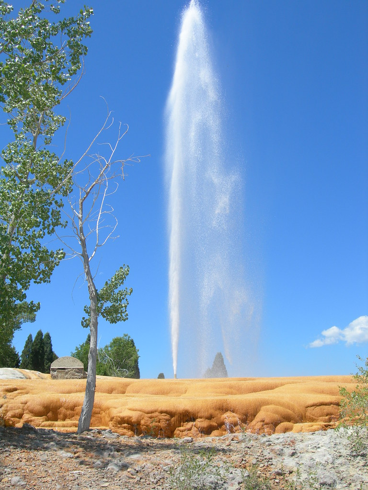

Soda Springs
Weather Summary
Currently:
Wind Chill:
High:
Humidity:
Wind Speed:
5 Day Forecast
The Famous Soda Springs
(Reprinted in part from Legends of America)
The world's only captive geyser, it was discovered when drilling for a
swimming pool nearly 80 years ago. It is now capped and controlled by a timer and it
erupts every hour on the hour.
The geyser reaches heights of 100 feet, 365 days a year.
Located along a shortcut on the Oregon-California Trail off of the main route to Fort Hall,
Idaho is Soda Springs. These natural bubbling pools of carbonated water, caused by ancient
volcanic activity, were first called “Beer Springs”. Visited by local Indians, fur traders,
and trappers prior to the days of the Oregon Trail emigrations, the springs were rightfully
considered to be one of the marvels of the overland trails.
At the time that pioneers were headed west for California and Oregon, there was an abundance
of springs and water in the area and it became known as the “Oregon Trail Oasis.”
Emigrants frequently took advantage of the hot water to wash clothes, bathing, and medicinal
purposes, often noting the picturesque scenery of the area and the smell that came from the
springs.
The development of the town of Soda Springs and the building of Alexander Reservoir has
destroyed or covered many of these historic springs; however, Steamboat Spring, Wagonbox Grave,
Hooper Spring, Octagon Spring, and two short traces of ruts can still be seen in the area. In Hooper
Springs Park, visitors can sample the carbonated water just as westward-bound travelers did
some 160 years ago.
If you'd like more information go to:
Legends of America
Up Front Weather Contacts
Mailing address: 📌
271 West Main Street
Preston, Idaho 87301
phone: ☎️ 208-555-1212
email: 📧
Up Front Weather.